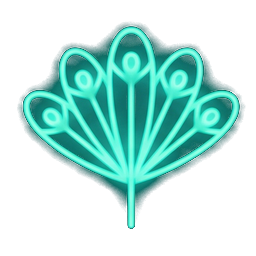

一段由文字、尊嚴與大局觀交織的經典龍虎鬥
故人化黃土 · 智慧傳千古
有水便是溪，無水也是奚，
去掉溪邊水，加鳥便是鷄；
得志貓兒勝過虎，
落魄鳳凰不如鷄。

有木便是棋，無木也是其，
去掉棋邊木，加欠便是欺；
龍遊淺水遭蝦戲，
虎落平陽被犬欺。
有手便是扭，無手便是丑，
去掉扭邊手，加女便是妞；
隆中有女長得醜，
江南沒有更醜妞。
有木便是橋，無木也是喬，
去掉橋邊木，加女便是嬌；
江東美女大小喬，
銅雀奸雄鎖二嬌。
周瑜怒髮衝冠之時，魯肅再度以幽默大度化解了劍拔弩張的危機：
★ 點醒眾人：曹兵壓境，孫劉若龍虎相鬥，大局必糟！
千載已過，我們能從魯肅的調解藝術中學到什麼？
網友借古諷今，以相同的拆字格式，傳唱了現代的防毒順口溜：
有水便是清，無水也是青，
去掉清邊水，加心便是情；
國家有難不用怕，
萬眾一心抗疫情。
有人就是傳，無人則是專，
除掉傳邊人，加車便是轉；
要使病毒不再傳，
勸君莫在外面轉。
「千年彈指已過，故人化為黃土。
而魯肅化干戈為玉帛的智慧表演，卻一直流傳在中華大地上！」
千萬別私存，轉送給你最愛的朋友吧！✨